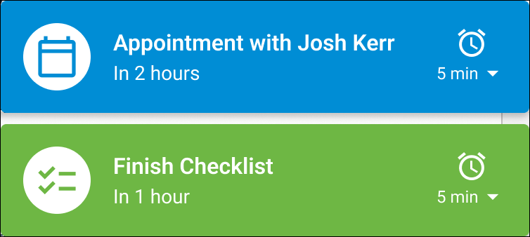
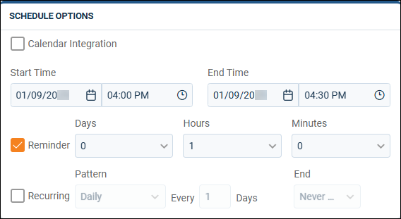

Source: https://rmxhelp.rentmanager.com/Topics/Express/KB/Reminders-Set-Up-Notifications.htm
Set Up Reminder Notifications
Rent Manager includes the ability to create tasks and appointments to keep track of your day-to-day activities, which can also recur on a daily, weekly, monthly, or annual basis. To ensure that these tasks are completed and appointments are attended, you can also set up reminders to receive alerts whenever you're accessing Rent Manager.
Rent Manager always adds a reminder to the user's  list, and the icon is updated to display the number of unread notifications they have. Additionally, a reminder pop-up is enabled by default. Reminder pop-ups displays in the bottom right of the browser window. Appointment reminders display as blue pop-ups, and task reminders display as green pop-ups. These pop-up also offer the ability to snooze or dismiss the reminder.
list, and the icon is updated to display the number of unread notifications they have. Additionally, a reminder pop-up is enabled by default. Reminder pop-ups displays in the bottom right of the browser window. Appointment reminders display as blue pop-ups, and task reminders display as green pop-ups. These pop-up also offer the ability to snooze or dismiss the reminder.

Related Preferences
To only have notifications display in your user account's  list, enable the Disable Reminder Pop-Ups option in personal preferences. For more information, refer to Reminders (Personal Preferences).
list, enable the Disable Reminder Pop-Ups option in personal preferences. For more information, refer to Reminders (Personal Preferences).
Set Reminders on Tasks and Appointments
Reminder notifications are generated only for tasks and appointments with reminder options selected. To add a reminder to a task or appointment, do the following:
-
Add or edit the desired task or appointment. For more information, refer to Add a Task or Memorized Task and Add an Appointment.
-
In the Schedule Options tile, select Reminder.

-
Enter a value for one or more of the three provided increments (Days, Hours, and Minutes) to determine when the reminder occurs. This time is relative to the Start Time and time.
-
To have the task or appointment repeat on a regular basis, check Recurringand select one of the four provided patterns (Daily, Weekly, Monthly, or Yearly) and the coordinating increment. If applicable, select an End from the drop-down list.
-
Click Save.
The task or appointment is created and the reminder is sent at the designated time.